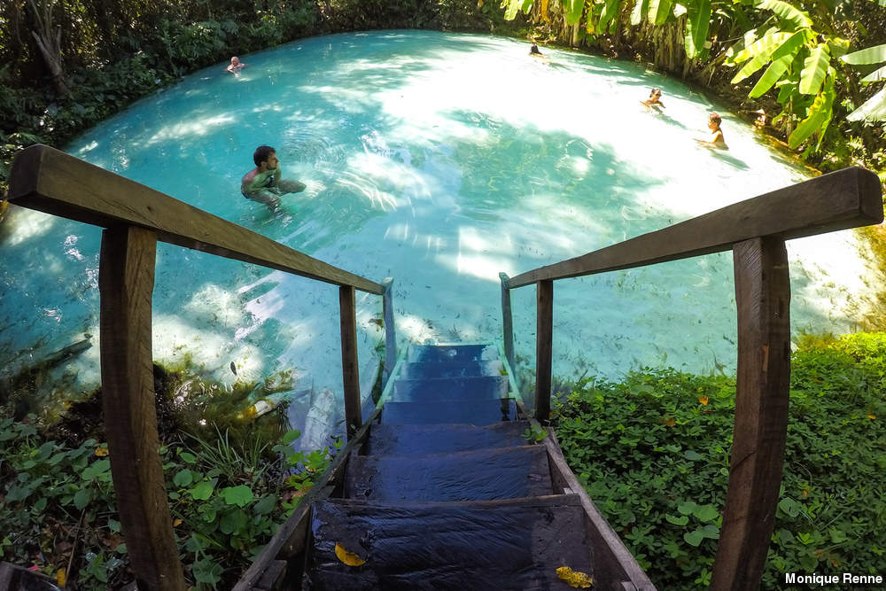

Mirante da Serra do Espírito Santo
O fenômeno raro faz do Jalapão um destino muito especial. As pequenas piscinas que surgem em meio ao cerrado arenoso são como oásis na paisagem. A água que brota nas nascentes e se mistura à areia vem com tanta potência dos lençóis freáticos que permite aos visitantes boiarem sem nenhum esforço. De fora o fervedouro parece ter chão, mas ao entrar é possível perceber que o que se vê é apenas areia em suspensão na água. Impossível alcançar o fundo e, o mais impressionante, impossível afundar! A sensação é única, mas você pode experimentá-la em oito diferentes fervedouros abertos à visitação. O custo varia entre R$ 10 e R$ 25 e o valor costuma estar incluso nos pacotes de viagem. Os fervedouros estão localizados na estrada que liga Mateiros a São Félix.